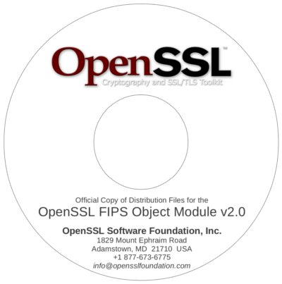

 The latest of the OpenSSL FIPS Object Module ("FIPS module") FIPS 140-2 validations saw the introduction of a new requirement by the CMVP:
The distribution tar file, shall be verified using an independently acquired FIPS 140-2 validated cryptographic module...Some prospective users of the OpenSSL FIPS Object Module 2.0 already have ready access to an existing securely-installed software product using FIPS 140-2 validated cryptography that is capable of calculating the HMAC-SHA-1 digest of a file on disk, in which case satisfying this requirement is easy (simply calculate the HMAC-SHA-1 digest of the source distribution file using the key
"etaonrishdlcupfm"
and confirm it is that same as documented in the Security Policy
document (e.g., "2cdd29913c6523df8ad38da11c342b80ed3f1dae" for
openssl-fips-2.0.tar.gz).
For most prospective users the identification, acquisition, installation, and configuration of a suitable product may be a challenge. (See Section 6.6 of our FIPS User Guide) The requirement for this verification with an independently acquired FIPS 140-2 validated cryptographic module does not apply when the distribution file is distributed using a "secure" means. Distribution on physical media is considered secure in this context so you can verify by obtaining a copy of the distribution files on CD-ROM disks via postal mail.
OpenSSL are not providing disks directly at this time. However we have an arrangement with KeyPair Consulting who will send a disk to you at no charge.
Important Disclaimer: The listing of these third party products does not imply any endorsement by the OpenSSL project, and these organizations are not affiliated in any way with OpenSSL other than by the reference to their independent web sites here.
Note that the files you will receive on these CDs will be identical in every respect (except for formal FIPS 140-2 compliance) with the files you can download from https://www.openssl.org/source/ Once the distribution files have been received on this CD they can be redistributed internally within an organizational entity (corporation, institution, or agency) by normal means.